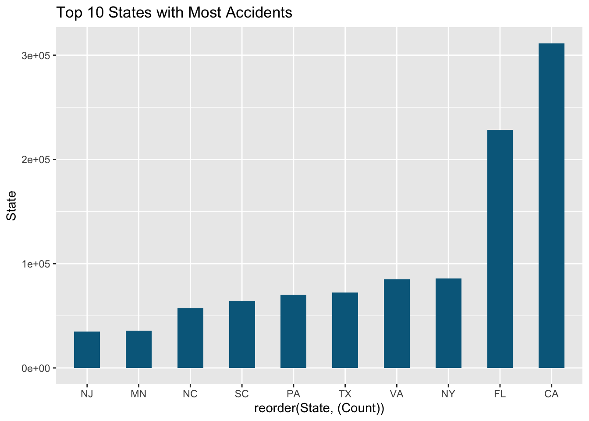

library(dplyr)
library(arrow)
library(tidyverse)
library(sparklyr)
library(dbplot)
library(corrr)
library(plotly)
library(ROSE)
seed_num <- 1234
sc <- spark_connect(master = "local", version = "3.4.0")DSA306 Group Project: Group 7
Project Introduction
We chose this
IMPORTING PACKAGES
EDA
Load accidents data in parquet format
# reading accidents data already made available in parquet data format
accidents <- spark_read_parquet(sc, path = "data/us_accidents")
glimpse(accidents)Rows: ??Warning in arrow_collect(object, ...): NAs introduced by coercion to integer
rangeColumns: 29
Database: spark_connection
$ Severity <int> 2, 2, 2, 2, 2, 2, 2, 2, 2, 2, 2, 2, 2, 2, 2, 2, …
$ Distance_Mi <dbl> 0.033, 0.025, 1.421, 0.168, 0.955, 0.863, 0.610,…
$ State <chr> "TX", "VA", "CA", "TX", "OR", "LA", "WV", "OH", …
$ Weather_Timestamp <dttm> 2022-12-17 13:55:00, 2022-10-15 18:52:00, 2022-…
$ Humidity <dbl> 25, 45, 11, 55, 28, 61, 17, 62, 69, 51, 50, 29, …
$ Pressure_In <dbl> 28.85, 29.59, 29.40, 29.68, 29.86, 29.88, 29.29,…
$ Visibility_Mi <dbl> 10, 10, 10, 10, 10, 10, 10, 10, 10, 10, 10, 10, …
$ Wind_Speed_Mph <dbl> 5, 5, 17, 18, 5, 7, 5, 3, 10, 12, 12, 6, 8, 7, 6…
$ Precipitation_In <dbl> 0.00, 0.00, 0.00, 0.00, 0.00, 0.00, 0.00, 0.00, …
$ Amenity <lgl> FALSE, FALSE, FALSE, FALSE, FALSE, FALSE, FALSE,…
$ Bump <lgl> FALSE, FALSE, FALSE, FALSE, FALSE, FALSE, FALSE,…
$ Crossing <lgl> FALSE, FALSE, FALSE, TRUE, FALSE, FALSE, FALSE, …
$ Give_Way <lgl> FALSE, FALSE, FALSE, FALSE, FALSE, FALSE, FALSE,…
$ Junction <lgl> FALSE, FALSE, FALSE, FALSE, FALSE, FALSE, TRUE, …
$ No_Exit <lgl> FALSE, FALSE, FALSE, FALSE, FALSE, FALSE, FALSE,…
$ Railway <lgl> FALSE, FALSE, FALSE, FALSE, FALSE, FALSE, FALSE,…
$ Roundabout <lgl> FALSE, FALSE, FALSE, FALSE, FALSE, FALSE, FALSE,…
$ Station <lgl> FALSE, FALSE, FALSE, FALSE, FALSE, FALSE, FALSE,…
$ Stop <lgl> FALSE, FALSE, FALSE, FALSE, FALSE, FALSE, FALSE,…
$ Traffic_Calming <lgl> FALSE, FALSE, FALSE, FALSE, FALSE, FALSE, FALSE,…
$ Traffic_Signal <lgl> FALSE, FALSE, FALSE, TRUE, FALSE, FALSE, FALSE, …
$ Sunrise_Sunset <chr> "Day", "Day", "Day", "Day", "Day", "Day", "Day",…
$ StartHr <int> 13, 18, 15, 17, 16, 12, 17, 21, 12, 15, 17, 13, …
$ DayOfWk <chr> "Sat", "Sat", "Fri", "Thu", "Mon", "Wed", "Wed",…
$ Duration <drtn> 25199 secs, 4502 secs, 7372 secs, 7955 secs, 17…
$ Temperature_C <dbl> 12.2, 20.0, 20.6, 30.6, 31.7, 9.4, 19.4, 25.0, 2…
$ Wind_Chill_C <dbl> 12.2, 20.0, 20.6, 30.6, 31.7, 7.8, 19.4, 25.0, 2…
$ TimeOfDay <chr> "Afternoon", "Evening", "Afternoon", "Afternoon"…
$ Weather_Condition_New <chr> "Fair", "Fair", "Fair", "Cloudy", "Fair", "Fair"…Distribution of accidents by State
## Distribution of accidents by State
grouped_state <- accidents |>
group_by(State) |>
summarise(Count = n()) |>
mutate(Count = as.numeric(Count)) |>
arrange(desc(Count)) |>
head(10) |>
collect()
# Visualize with Spark
grouped_state |>
ggplot(aes(reorder(State, (Count)), Count)) +
geom_col(fill = "deepskyblue4", width = 0.5) +
labs(title = "Top 10 States with Most Accidents") +
ylab("State") +
coord_flip()